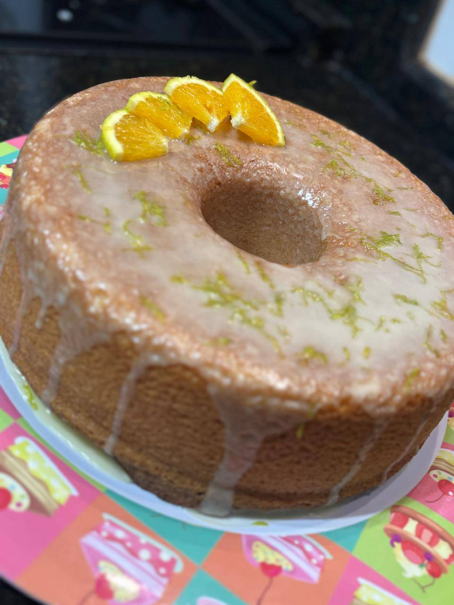

Bolo de Laranja
O bolo de laranja que eu fiz com a minha mãe :)
Ingredientes:
Massa:
- 3 ovos
- Suco de 2 e 1/2 laranjas
- 1 xícara de óleo
- 2 xícaras de açúcar impalpável(ou confeiteiro)
- 3 xícaras de farinha de trigo
- 1 colher de sopa de fermento em pó
Cobertura:
- Suco de 1 e 1/2 laranjas
- 1 xícara de açúcar confeiteiro
Modo de preparo:
Bolo:
- Pré-aqueça o forno a 180°C.
- Bata no liquidificador ou na batedeira os ovos, o suco da laranja, o óleo, e o açúcar.
- Depois despeje em uma tigela e junte com a farinha e o fermento até a massa ficar homogênea.
- Depois colocar em uma assadeira com furo untada com manteiga e farinha e levar para o forno.
- Asse em forno, pré aquecido, à 180ºC, por cerca de 40 minutos, ou até dourar. Desenforme e deixe esfriar.
Cobertura:
- Em uma tijela adicione o suco de laranja e o açúcar confeiteiro.
- Mexa bem até formar uma calda.
- Depois é só colocar por cima do bolo.
Veja a receita.
